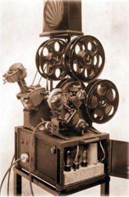
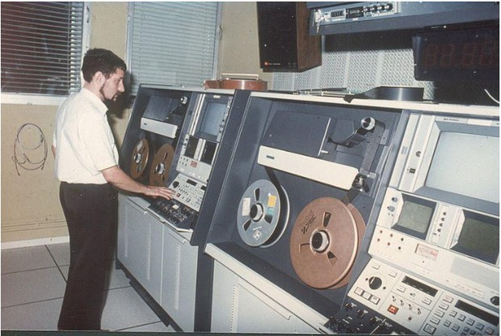
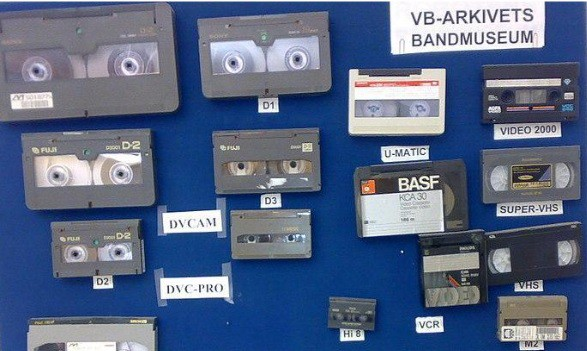
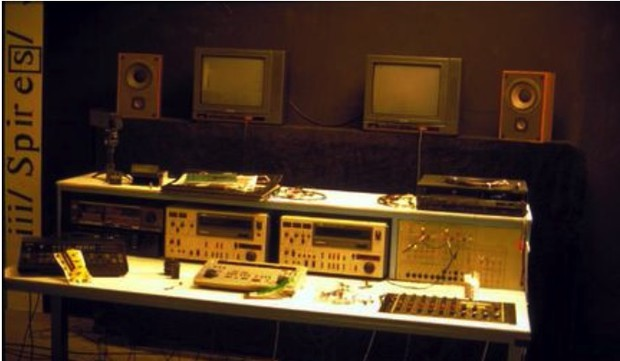

חשיבות הנושא
הכלי הטכנולוגי המשמש אותנו היום, תוכנת המחשב, לא נוצר מאליו. כלי זה מבוסס על קונספטים שהומצאו בטכנולוגיות הקודמות, שהן עריכת הפילם ועריכת הווידיאו. גם מה שאנו מכירים היום כ"שפת העריכה" הוא תוצאה של שרשרת התפתחויות, מהשוט הבודד המרכיב את הסרט ועד הסרט המחולק לסצנות המחולקות לשוטים. סקירת ההיסטוריה של טכנולוגיות העריכה ושפת העריכה תראה לתלמידים שהם לא פועלים בחלל ריק ותעזור להם להבין קונספטים בסיסיים בטכנולוגיית העריכה ובשפת העריכה.
תת-הנושאים
- ה.1 טכנולוגיות העריכה במהלך ההיסטוריה.
- ה.2 התפתחות שפת העריכה.
מטרות אופרטיביות
- התלמיד יכיר את טכנולוגיות העריכה בעבר ובהווה.
- התלמיד יכיר את התפתחות שפת העריכה.
- התלמיד יבין שמקצוע העריכה לא נוצר בחלל ריק אלא נובע מהתפתחות טכנולוגית ומהתפתחות שפת העריכה במהלך הזמן.
מושגים מרכזיים
- פילם
- וידיאו
- חיתוך והדבקה
- הקלטה על קלטת
- עריכת non-linear
- שוט-סרט
- שוט-סצנה
- קאט
- עריכה המשכית
- עריכה מקבילה
- Point of view
- מונטאז': מטרי, ריתמי, טונאלי, אובר-טונאלי, אינטלקטואלי
ה.1 טכנולוגיות העריכה במהלך ההיסטוריה
עריכת פילם
פילם הוא חומר שמצופה בשכבה המגיבה כאשר באה במגע עם אור וכך נוצרת עליו תמונה. העריכה בפילם החלה בצפייה במקרנה, חיתוך במספריים והדבקה באמצעות דבק של הפילם.
מאוחר יותר הומצאו מכונות עריכה משוכללות כגון Moviola ו-Steenbeck שהפכו את העריכה ליותר נוחה ויותר משוכללת. גם עם מכונות אלה העריכה בוצעה באמצעות חיתוך והדבקה, באמצעות מכשיר ה-Splicer. מה שמקובל היום כנקודות in ו-out סומן באמצעות עיפרון לבן מחיק.
Editing on a Moviola
צפייה בעריכה על מכונת מוביולה.

16mm & 35mm Film in the Cutting Room.
Chicago's last motion picture film lab
התמונה צולמה על פילם הצלולויד והקול הוקלט בנפרד על חומר מגנטי.
כאשר פתרו ב-1927 את בעיית ההתאמה בין התמונה לקול, עוזרי עריכה "הכניסו לסינק" את הסרט, כלומר סנכרנו בין התמונה לקול. שולחנות העריכה כללו בדרך כלל ערוץ תמונה שהוקרנה על מסך שולחן העריכה ושני ערוצי קול שהושמעו מרמקול. הערוצים כללו את חלקי הסרטים והסאונד המגנטי שנחתכו וחוברו יחד.
בתמונה הבאה של שולחן העריכה הנפוץ Steenbeck אנו יכולים לראות שהרעיון המונח בבסיסו של הטיימליין בתוכנות העריכה של היום נלקח למעשה מערוצי התמונה והקול בשולחן העריכה.
זהו התהליך הטכני של העריכה בפילם מהצילום ועד להפצת הסרט:
- צילום בנגטיב.
- פיתוח במעבדה והדפסת פוזיטיב לעריכה.
- עריכת הסרט והקול באמצעות חיתוך והדבקה בסלוטייפ.
- חיתוך הנגטיב על פי עותק העריכה הסופית.
- יצירת פסקול אופטי במעבדה מהמיקס סאונד הסופי.
- הדפסה במעבדה של עותקים של הסרט הכוללים תמונה וסאונד אופטי.
מלבד האפשרות להדפיס עותקים במספר בלתי מוגבל, הגימור במעבדה אפשר להתגבר על השריטות והלכלוכים שנוצרו על הסרט במהלך העריכה בשולחן העריכה.
לצורך כתבות למהדורות חדשות בטלוויזיה, כדי לא לחכות להליכי המעבדה דילגו על השלבים 4-6 ושלחו את הסרט היישר להקרנה. ההקרנה נעשתה באמצעות מקרנה שנקראה double system שבאמצעותה היה אפשר להקרין בסינק ערוץ תמונה וערוץ קול מגנטי נפרדים. לכן בעריכת כתבות טלוויזיה הקפידו לערוך עם כפפות בד כדי לא ללכלך את הסרט, ואם היה זמן, ניקו את הסרט באמצעות חומר כימי.
עריכת וידיאו
אף שהטכנולוגיה כבר הייתה קיימת מזמן, עד שנות השמונים של המאה העשרים היה קשה מאוד לצלם בווידיאו מחוץ לאולפן בגלל הסרבול של מכשירי הווידיאו הענקיים שהשתמשו בגלגלי סרטים מגנטיים להקלטת וידיאו. באותו אופן, גם עריכת הווידיאו, שנקראה אז "עריכה אלקטרונית", לא התפתחה. לכן, במהלך עשרות שנים במאה העשרים הפילם המשיך לשמש את הטלוויזיה. סרטי הפילם הוקרנו בטלוויזיה באמצעות מכשיר ה-Telecine שהמיר את התמונה והקול מהפילם לאותות אלקטרוניים.
מצב זה השתנה בשנות השמונים של המאה העשרים, כאשר נכנסו לשימוש נפוץ קלטות הווידיאו ומצלמות שמצלמות על קלטת וידיאו. זוהי תחילת עידן עריכת הווידיאו.
מערכת עריכת הווידיאו כללה שני מכשירי וידיאו המחוברים באמצעות כבלים אלקטרוניים, כאשר לכל אחד מחובר גם מסך משלו. למכשיר השמאלי (player) הוכנסו קלטות חומר הגלם. למכשיר הימני (program) הוכנסה הקלטת שעליה נוצר הסרט הערוך. עריכת הווידיאו התבצעה באמצעות הקלטה מהמכשיר השמאלי למכשיר הימני. מזכיר משהו? בהחלט. זהו הרעיון מאחורי שני המוניטורים המשמשים לעריכה בתוכנות העריכה של היום.
חומרי הגלם יכלו להיות בקלטות רבות שאפשר היה להכניס למכשיר השמאלי לפי הצורך. באמצעות כפתורים סומנו נקודות אין ואאוט, והמקטע המסומן הוקלט בקלטת במכשיר הימני. כך נוצר על קלטת הסרט רצף של הקלטות שוטים – הסרט הערוך. אולם עצם ההקלטה הייתה בעיה, מכיוון שהיא הגבילה את אפשרויות העריכה. כדי לעשות שינויים היה צריך לשכפל את הסרט הערוך – מה שגרם לירידת האיכות של הווידיאו. בעידן הקלטות, כל העתקה הורידה את איכות התמונה באופן הנראה לעין. בנוסף, נגינת הקלטות בזמן העריכה שחקה את הסרט שבתוך הקלטת ויצרה הפרעות אלקטרוניות הנראות לעין.
כדי להתגבר על כך הומצאה שיטת האופליין-אונליין.בשיטה זו קלטות חומר הגלם שוכפלו אחת לאחת, והקלטות המשוכפלות הן ששימשו לעריכה. זו הייתה עריכת האופליין, למעשה עריכת הסרט, שבה היה אפשר לשכפל את החומר ללא חשש מירידת האיכות שאכן קרתה בכל פעם שרצו לתקן או לשנות את הסרט. חדר עריכת האופליין היה בסיסי ופשוט, והמכשירים שם אפשרו רק לעשות קאטים. בסיום עריכת הסרט הועברה קלטת הסרט ("האופליין") לחדר עריכה אונליין, ושם שוחזרה העריכה בשימוש עם קלטות חומר הגלם המקוריות, בדיוק על פי הערוך בקלטת האופליין. אותה עריכה הוקלטה על קלטת חדשה – קלטת האונליין. שיטת אופליין-אונליין נכנסה גם לעריכה בתוכנות, כאשר מסיבות שונות אנו משכפלים את חומרי הגלם לפורמט באיכות נמוכה יותר, המשמש אותנו לעריכה, ובסוף עריכת הסרט התוכנה מחליפה את החומרים באיכות הנמוכה בחומרים המקוריים.
בחדר עריכת האונליין המשוכלל הוכנסו גם אפקטים ומעברים של וידיאו, ושם נעשו גם תיקוני הצבעים.
"Carthage Schools Present" - Videotape Editing (1988)
עריכת וידיאו בבית ספר תיכון בארצות הברית, 1988
עד סוף ימיה, גם לאחר שהקלטות עברו להקלטה דיגיטלית, טכנולוגיית הווידיאו נשארה נחותה מאוד באיכות התמונה לעומת הפילם. מכיוון שאיכות כזאת לא אפשרה הקרנה על מסך גדול, הווידיאו שימש רק לטלוויזיה ולכל סוגי הסרטים להקרנה על מסך קטן. את סרטי הקולנוע המשיכו לצלם ולערוך בפילם.
עריכת מחשב
בתחילת שנות התשעים נכנסה לשימוש טכנולוגיה מהפכנית של חברת AVID לעריכה במחשב.חומר הגלם (פילם או וידיאו) קודד לקובצי מחשב, והעריכה החלה להיעשות באמצעות המחשב. זו הטכנולוגיה שאנו משתמשים בה היום, אך ודאי אין זה סוף פסוק. יהיו טכנולוגיות חדשות שאנו עדיין לא מעלים בדעתנו.
לעריכה באמצעות תוכנת מחשב קוראים גם Non-linear editing. הכוונה אינה לסיפור הבנוי בצורה לא ליניארית, אלא לטכנולוגיה המונחת מתחת לעריכת המחשב, בהשוואה להקלטה הליניארית של עריכת הווידיאו. בניגוד להקלטת הווידיאו, הסיקוונס שנערך בטיימליין בתוכנת המחשב אינו מוקלט ברצף כלשהו. הסדר בטיימליין הוא וירטואלי בלבד. חומרי הגלם אינם נחתכים ומודבקים או מוקלטים באמת, אלא מקטעים מהם מנוגנים ברצף שקבענו בטיימליין. לכן אנו יכולים לשנות את הסדר כאוות נפשנו ללא כל בעיה ומכאן השם Non-linear editing. גם הפילם, אגב, הוא סוג של Non-linear editing.
שלוש הטכנולוגיות שתיארנו למעלה – הווידיאו הדיגיטלי, וידיאו הקלטות והפילם – התקיימו במקביל ושימשו בערבוביה. בתקופה זו סרטי טלוויזיה שצולמו על קלטות וידיאו נערכו במחשב, אבל האונליין שלהם נעשה בעריכת וידיאו כי איכות הווידיאו הדיגיטלי הייתה נמוכה לעומת איכות הווידיאו של הקלטות, שבתורה הייתה נמוכה מאיכות הפילם. סרטי קולנוע צולמו בפילם, נערכו במחשב ונשלחו למעבדה לחיתוך נגטיב.
תקופה זו הגיעה לקצה לאחר הופעת ה-HD בווידיאו הדיגיטלי, שלא רק שהיה הרבה יותר איכותי מווידיאו הקלטות, אלא גם הצליח להתחרות באיכות התמונה של הפילם.
ה.2 התפתחות שפת העריכה
עריכה המשכית בנויה מהרכבת מאסטר שוט עם חלקים של מה שקורה במאסטר שוט בגדלים שונים. העריכה ההמשכית מתבטאת באחידות שנוצרת כתוצאה מחיבור השוטים המבטאים את המיקומים בפריים ואת התנועה של הדמויות והאובייקטים האחרים בתוך הסצנה.
הסרטים הראשונים שנעשו הם סצנות בשוט אחד. לא רק שעדיין לא המציאו את העריכה, אלא טרם המציאו גם את תנועת המצלמה. אפשר לראות את היעדרן של העריכה ותנועת המצלמה בסרט "המשקה המושקה" של האחים לומייר מ-1895, ככל הנראה הסרט העלילתי הראשון והקומדיה הראשונה. בקטע שהגנן רודף אחרי הילד התעלולן עד קצה הפריים, הוא תופס אותו שם ומחזיר אותו אל מול המצלמה כדי להרביץ לו.
"The Gardener" or "The Sprinkler Sprinkled" (Lumière Brothers, France, 1895)
בשנים הראשונות של הקולנוע, כל תוספת לשפת הקולנוע הייתה חידוש חסר תקדים. כך, לפעמים עקב בצד אגודל ולפעמים בקפיצות גדולות התפתחה שפת העריכה.
העריכה הראשונה נעשתה כנראה ב-1898 על ידי הבמאי האנגלי ר"ו פול בסרטו Come along, Do! הייתה זו קומדיה באורך דקה שכללה שני שוטים. לרוע המזל, מהשוט השני שרדו רק שני שוטים, אך נראה ששני שוטים אלה הם החיבור הראשון שנעשה מתוך כוונה להעביר את השחקנים מסצנה אחת לאחרת.
Come along, do! - 1898
הבמאי הצרפתי ז'ורז' מלייס צילם ב-1899 את סרטו "פרשת דרייפוס" שבו חיבר 12 שוטים שכל אחד מהם סצנה. בין שוט לשוט הייתה כותרת.
Georges Méliès: L'Affaire Dreyfus (1899)
ב-1902 יצר מלייס את סרטו "מסע אל הירח" שכלל עריכה של 30 סצנות שוט שחוברו ביניהן בדיזולבים וקאטים. ייתכן שבסרט זה מוצג לראשונה הרעיון של מעבר הזמן, בקטע שבונים את החללית, עוברים לשוט אחר וחוזרים אל החללית שכבר בנויה.
A Trip to the Moon - the 1902 Science Fiction Film by Georges Méliès
בסוף המאה ה-19 ותחילת המאה ה-20 הציג ז'ורז' מלייס עריכת אפקטים מיוחדים במצלמה באמצעות צילומים וחשיפות כפולות.
Un homme de têtes (or The Four Troublesome Heads) by Georges Melies, 1898
1900s movie : MELIES L'homme orchestre (The One-Man Band) (NO SOUND)
הקאט הראשון בתוך סצנה נעשה כנראה בסרט "כפי שנראה מבעד לטלסקופ" של ג'ורג' אלברט סמית בשנת 1900. זהו סרט של שלושה שוטים. בשוט הראשון איש מסתכל בטלסקופ, בשוט השני רואים בתוך עיגול את מה שהוא רואה בטלסקופ, ובשוט השלישי חוזרים אליו מסיים להסתכל בטלסקופ והסרט מסתיים בשוט זה במורה חביבה מאוד. זהו הסרט הראשון כנראה שהשתמשו בו ב-Point of view.
George Albert Smith: As Seen through a Telescope (1900)
באותה שנה השתמש ג'יימס ויליאמסון בקאטים של עריכה המשכית בתוך סצנה: תנועה שמתחילה בשוט אחד ממשיכה בשוט שאחריו.
James Williamson: Attack on a China Mission (1900)
אדווין פורטר השתמש באופן נרחב בעריכה מקבילה באמצעות מספר שוטים. עריכה מקבילה מראה לסירוגין שני אירועים במקומות שונים המתרחשים במקביל. ב-1903, בסרטו "שוד הרכבת הגדול", תוך כדי העריכה המקבילה הוא עשה גם קפיצות קדימה בזמן והציג שליטה במקום ובזמן באמצעות העריכה. בסרט זה עשה פורטר אולי גם את תנועת המצלמה הראשונה בקולנוע, או לפחות אחת הראשונות.
The Great Train Robbery
במאות סרטים שיצר הבמאי דיוויד ווק גריפית בין 1908 ל-1915, אז יצר את סרטו המונומנטלי השנוי במחלוקת מפאת גזענות "הולדתה של אומה", הוא עשה שימוש בכל טכניקות העריכה, שכלל אותן והוסיף גם משלו: מפלשבקים, דרך אקסטרים לונג שוט ועד חילופי מבטים בקלוז-אפים ושימוש בכל גודלי השוטים שאנו מכירים היום. גריפית הראה שהסצנה יכולה להיבנות משוטים שונים שצולמו מזוויות שונות ומגדלים שונים, והעריכה יחד של כל אלה יכולה לבנות דרמה ולהביא את הצופה בהדרגה לשיא הרגשי של הסצנה באמצעות עריכה המשכית והגברה של קצב החיתוכים. גריפית נחשב למייסד העריכה ההמשכית ולאבי העריכה המודרנית.
הולדתה של אומה
The Birth of a Nation 1915 D. W. Griffith full movie
הולדתה של אומה ב-8 דקות
Birth of a Nation in 8 Minutes
הבנייה הדרמטית של דיוויד ווק גריפית
D W Griffith Dramatic Construction - Film Editing
D. W. Griffith is the acknowledged father of film editing in its modern sense...
התפתחות המונטאז' הסובייטי
בשנות העשרים של המאה העשרים, קולנוענים מברית המועצות העמידו קונספט חדש של עריכה כנגד העריכה ההמשכית: המונטאז'.
לב קולשוב עשה ניסוי: הוא הקרין בפני שלוש קבוצות של צופים סרטון שבו שני שוטים מחוברים. בכל אחד מהסרטונים כיכב קלוז-אפ של השחקן איוון מוזג'וקין, אבל השוט השני היה שונה לכל קבוצת צופים:
- קלוז-אפ של השחקן מחובר לצלחת מלאה במרק.
- אותו קלוז-אפ בדיוק מחובר לילד בארון מתים.
- אותו קלוז-אפ בדיוק מחובר לאישה בלבוש חשוף.
תשובת הקהל שצפה בסרט 1 הייתה: רעב.
תשובת הקהל שצפה בסרט 2 הייתה: צער.
תשובת הקהל שצפה בסרט 1 הייתה: תשוקה.
יתר על כן, בשלוש הקבוצות היו צופים ששיבחו את המשחק של השחקן.
בניסוי זה הוכיח קולשוב את טענתו שחיבור של שני שוטים שאינם קשורים זה לזה יוצר משמעות או רגש חדשים שאינם קיימים בשוטים המקוריים. זהו הרעיון המרכזי של המונטאז'.
באינטרנט יש שתי גרסאות לניסוי של קולשוב. נראה שהן לא הניסוי המקורי, אך מבטאות את הניסוי.
Soviet Film - The Kuleshov Effect (original) by Lev Kuleshov 1918
Kuleshov Effect / Effetto Kuleshov
מעניין לראות את גרסתו המעט יותר משוכללת של אלפרד היצ'קוק לניסוי קולשוב, שכולל לא רק את המבט של הדמות אל אובייקט, אלא גם את התגובה שלה:
Hitchcock Demonstrates Montage
בנוסף לקולשוב, הבמאים הסובייטיים וסוולוד פודובקין, ג'יגה וורטוב וסרגיי אייזנשטיין פיתחו ושכללו את המונטאז', וניסו לרתום אותו לשירות המהפכה המרקסיסטית בברית המועצות. אף שהעריכו מאוד את העריכה ההמשכית של גריפית, הם ראו בשיטה זו קולנוע ריאקציונרי והעמידו את המונטאז' כעשייה קולנועית מהפכנית.
הסרטים של אנשי המונטאז' עסקו בנושאי המהפכה ובניית החברה הסובייטית החדשה ושירתו היטב את השלטון של ברית המועצות החדשה. אייזנשטיין אף ניסח את תיאוריית המונטאז' בספרו "צורת הסרט": בדומה לרעיון של מרקס, שבו הקונפליקט בין מעמד הפועלים למעמד הבורגנות מביא למהפכה שמובילה לחברה חדשה, קונפליקט הרעיונות שבחיבור בין שני שוטים מנוגדים יוצר את המשמעות החדשה של החיבור: השוט הראשון הוא התזה, השוט השני הוא אנטי-תזה, והמשמעות שנוצרת כתוצאה מהקונפליקט בין השוטים היא הסינתזה.
אייזנשטיין קבע חמישה סוגי מונטאז':
- מונטאז' מטרי.
- מונטאז' ריתמי.
- מונטאז' טונאלי.
- מונטאז' אובר-טונאלי.
- מונטאז' אינטלקטואלי.
המונטאז' המטרי מתייחס לאורכם של השוטים שנערכו יחד. לא השינוי בתוכני השוטים כי אם עצם החזרה של השוטים ועריכתם בקצב מוגבר, כלומר חיתוכם באורכים שהולכים ומתקצרים, יוצר מתח ונותן משמעות לקבוצת השוטים שנערכים במונטאז' המטרי.
מונטאז' מטרי מתוך "אוקטובר", אייזנשטיין, 1928
metric montage
במונטאז' הריתמי ניתן לתכנים של השוטים משקל שגובר על החיתוכים המטריים ביניהם. התנועה בתוך הפריים היא שקובעת את המעבר לשוט הבא.
מונטאז' ריתמי מתוך "פוטיומקין", אייזנשטיין, 1925
The Battleship Potemkin (1925) rhythmic montage
במונטאז' הטונאלי התנועה נתפסת במובן רחב יותר שיש לו השלכה על כל הקטע הנערך. השיקול העיקרי לחיתוכים בין השוטים הוא תוכן השוט והתנועה או חוסר התנועה בתוך השוט.
מונטאז' טונאלי מתוך "פוטיומקין", אייזנשטיין, 1925
The Battleship Potemkin (1925) tonal montage
מונטאז' האובר-טונאלי מה שיקבע את העריכה הוא הטון הרגשי של הקטע הערוך בכללותו, תוך כדי השילוב של המונטאז' המטרי, הריתמי והטונאלי.
מונטאז' אובר-טונאלי, סצנת מדרגות אודסה מתוך "פוטיומקין", אייזנשטיין, 1925
Battleship Potemkin | The Odessa Steps Scene
המונטאז' האינטלקטואלי יוצר אמירה באמצעות דימוי או הנגדה. זהו חיבור בין שוטים או קבוצת שוטים שאין ביניהם קשר של מקום וזמן, והחיבור ביניהם מביע רעיון.
מונטאז' אינטלקטואלי באמצעות הנגדה מתוך "איש עם מצלמת קולנוע", ג'יגה ורטוב, 1929
Man with a Movie Camera (1929) intellectual montage 1
מונטאז' אינטלקטואלי באמצעות דימוי מונטאז' מטרי מתוך "אוקטובר", אייזנשטיין, 1928
intellectual montage
לעומת אייזנשטיין, שיישם את המונטאז' בסרטים עלילתיים, הבמאי התיעודי ג'יגה ורטוב גרס שרק תיעוד כן של המציאות יביא לעם את בשורת המהפכה באמצעות הסרטים וידרבן אותו לתמוך במהפכה. באמצעות טכניקת ה-Kino-Eye (עין קולנועית) שהוא פיתח הוא שאף להביא לצופים לא חיקוי של מה שהעין יכולה לראות, אלא מה שאינו נגיש לעין האנושית. ואת המציאות שלא נגישה לעין האנושית הביא ורטוב עם מונטאז' מרהיב של צילומים תיעודיים מחיי היומיום.
בעבודתו התיעודית הניסיונית הוא יצר שפת קולנוע בינלאומית ללא הזדקקות לשפה האנושית המדוברת או הכתובה. כך הצליח ג'יגה ורטוב להפריד את הקולנוע מהתיאטרון ומהספרות.
סרטו החשוב ביותר, "איש עם מצלמת קולנוע" (1929), מתאר 24 שעות בחיי עיר בברית המועצות. הסרט צולם במשך שלוש שנים בארבע ערים שונות: מוסקבה, קייב, אודסה וחרקיב. יחד עם אחיו מיכאל קאופמן שצילם ואשתו יליזבטה סבילובה שערכה, סרט זה מהווה תרומה גדולה לשפת הקולנוע והעריכה, והוא גדוש בהמצאות צילומיות, נרטיביות ועריכתיות ושכלולים של מה שכבר היה קיים: אנימציה באמצעות הזזת חפצים, חשיפות כפולות, הילוכים איטיים, הילוכים מהירים, הקפאת תמונה, ג'אמפ-קאטים, מסכים מפוצלים וקאטים במהירות מסחררת.
"איש עם מצלמת קולנוע", 1929
Man With A Movie Camera / Dziga VERTOV - 1929 - Full frame remastered.
ניתוח הסרט "איש עם מצלמת קולנוע"
Man with a Movie Camera and the Truth in the Movie-Eye - Brows Held High

- כל תלמיד יבחר קטע באורך 3 דקות בסרט "איש עם מצלמת קולנוע", יפרק אותו לשוטים בודדים בתוכנת העריכה באמצעות סאב-קליפים, יערוך את הקטע מחדש, בעריכה אחרת, ויתאים מוזיקה לקטע.
- כל תלמיד יבחר קטע באורך 2 דקות בסצנת מדרגות אודסה בסרט "פוטיומקין", יפרק אותו לשוטים בודדים בתוכנת העריכה ויערוך את הקטע מחדש, בעריכה אחרת, ויתאים מוזיקה לקטע.
- קבוצות של שניים-שלושה תלמידים יצלמו ויערכו את ניסוי קולשוב שלהם, עם שחקן או שחקנית משלהם. רצוי לא לחקות את הניסוי המקורי אלא לחשוב על אובייקטים אחרים שהשחקן מביט בהם.
תוכנות העריכה שאבו השראה ודימויים ממושגים ואלמנטים שנולדו בטכנולוגיות הקודמות:
● המוניטורים סורס ופרוגרם הם דימוי של שני המכשירים המחוברים למסכים מעריכת הוידאו.
● הטיימליין הוא דימוי של ערוצי התמונה והקול בשולחן העריכה בפילם.
● הרעיון של עריכת אוף ליין-און ליין במחשב שבה מעתיקים את חומרי הגלם המקוריים לקבצים באיכות נמוכה יותר לצורך עריכה ובסוף העריכה מחליפים את החומרים הערוכים לקבצי המקור האיכותיים שאוב מעריכת אוף ליין-און ליין בעריכת וידאו.
● המושג בין (bin) לקוח מעריכת הפילם שבה השתמשו בארון עץ שבו נתלו חומרי גלם.
● המושג טרים (trim) -פעולת ההארכה והקיצור של קליפים בטיימליין- לקוח אף הוא מעריכת פילם. trimming היא פעולת הקיצוץ של הפילם במהלך העריכה ו- trims הם חלקי הפילם שהוצאו מהסרט.